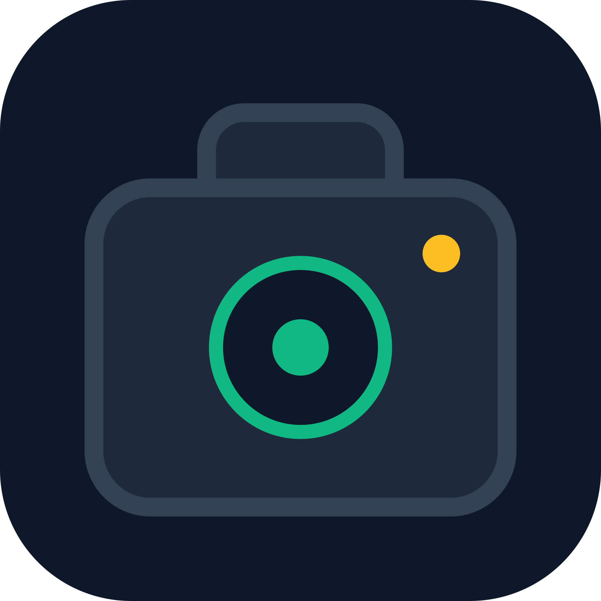

GPS Camera Nativa
v1.0.0 (Android)
Aplicación nativa de cámara fotográfica con incrustación automática de coordenadas geográficas en tiempo
real (Latitud, Longitud y Dirección).
- Captura rápida con marcas de agua GPS
- Procesamiento nativo y local de imágenes
- Gestión automatizada de permisos
Descargar APK Directo